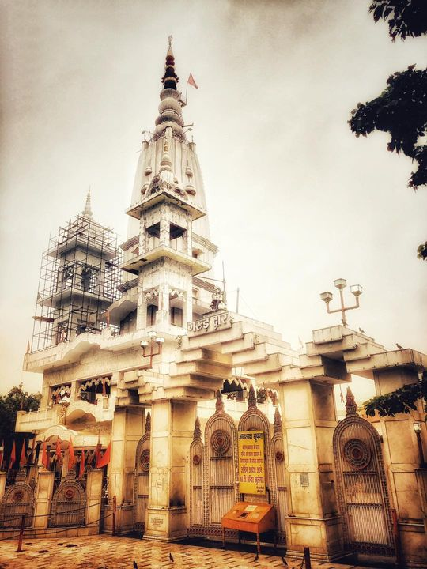
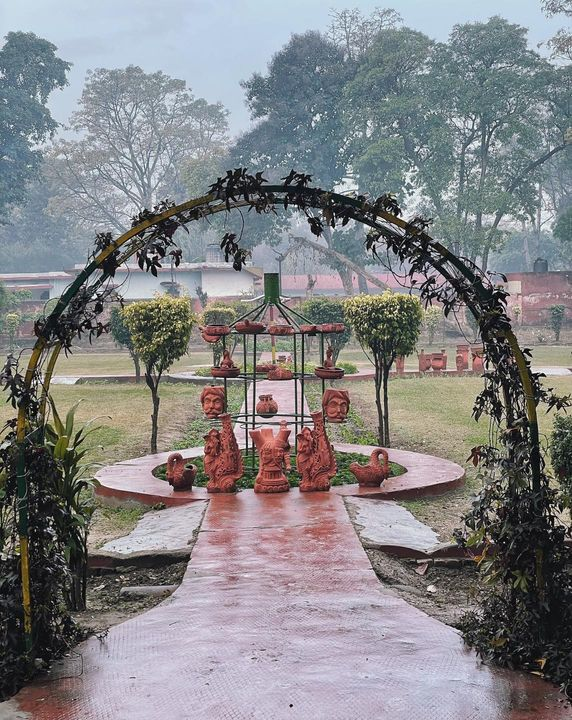
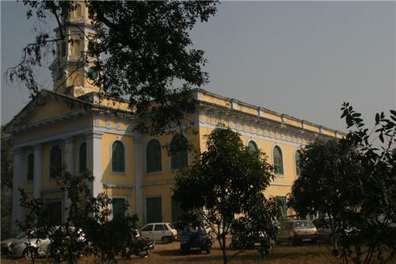
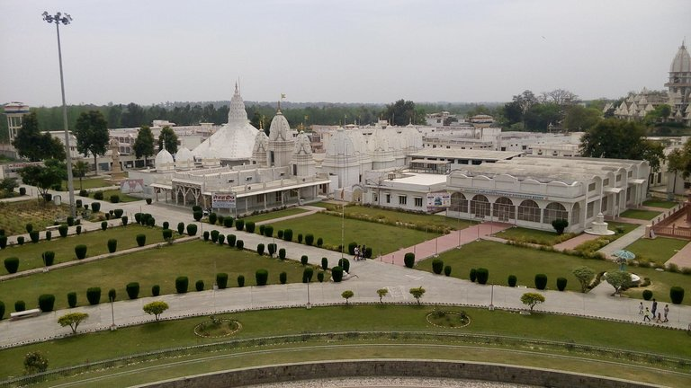
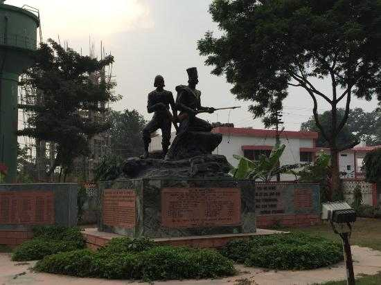
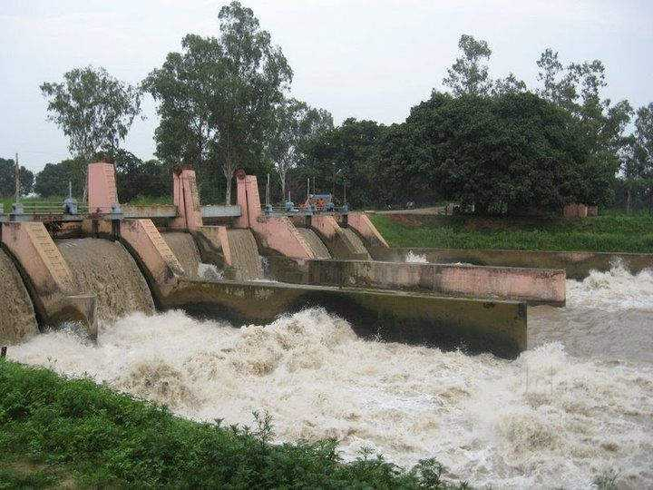
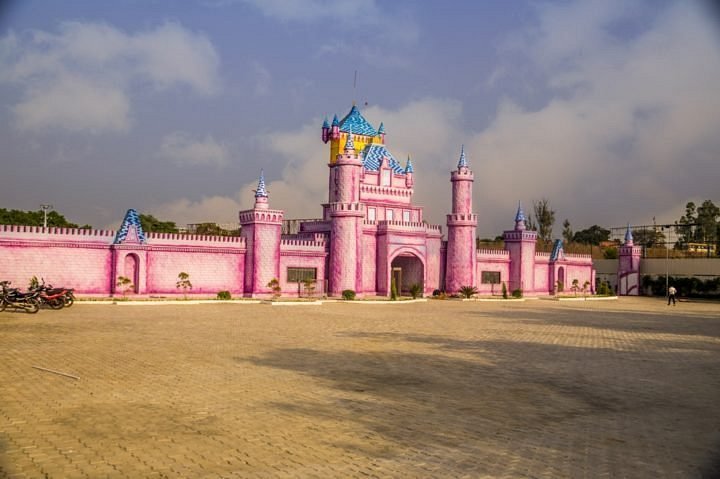

There are many famous tourist places in Meerut which are famous worldwide which you
can explore and many have some very good history too.
So Lets Explore.
An interesting place which not only has religious significance but historical importance as well, Augarnath
Temple is an important place to see in Meerut. Dedicated to Lord Shiva, this Hindu temple is located in the
Cantonment area of the city and is one of the most popular tourist attractions in Meerut. It is the place
where the great revolt of India's independence in 1857 started. The history of this temple in Meerut is
little known. However, it is said that at this temple, the Maratha rulers used to perform the pilgrimage on
auspicious occasions making it a significant place of worship in the city. The temple complex also includes
a memorial which is built to commemorate the martyrs of the Independence War of 1857.
Along with that, the temple also houses two shrines - Shiva Mandir and Shri Krishna Mandir. Of both the
temple, the Shri Krishna Mandir is the recent addition in Augarnath Temple. The present structure of the
temple has replaced the old temple. Until 1944, the temple had a large complex consisting of numerous small
shrines and a nearby well. Also, it was surrounded by a cluster of trees that make the setting of Augarnath
Temple a scenic one.

Click to get the location of Augarnath Temple
Gandhi Bagh is one of the oldest parks in Meerut which was set up by East India Company. It is located on
Mall Road, not very far away from the city and is famous for the musical fountain show which happens every
evening. This famous British spot has lush greenery with mango, mulberry, and bamboo trees.
Currently, the place is maintained by the Meerut Cantonment Board who is trying to elevate the park to the
next level by adding beautiful children play area, car rides, boat rides, and even camel rides. With a
walking trek path, terracotta park, and cricket ground, it is a perfect spot for a family picnic or anyone
to spend the day with a green layer.

Click to get the location of Gandhi Bagh
St. John's Church is one of the popular churches that were established by the East India Company in 1819.
This church is considered to be one of the oldest and the largest in terms of seating capacity. At present,
the church is under the Diocese of Agra. St. John's Cemetery located next to the church. St. John's
Secondary School is run by the parish of this church and is located close to where the church is located.
The church has an illustrious history of 200 years and reflects the glory of the Anglican period even in the
present day.

Click to get the location of Saint John Church
It is situated in district Meerut & connected through Meerut-Bijnor Road, about 37 kms. from Meerut and 100
kms. from Delhi. It has been the silent witness to the majestic, grandeur, royal conflicts and princely
anecdotes of Pandavas & Kauravas. It was also known as capital city of Pandavas and Kauravas at the time of
Mahabharata. Sites related to Mahabharata spread across the Hastinapur like Vidurr Tila, Pandaveshwar
Temple, Baradri, Draunadeshwar Temple, Karna Temple, Draupadi Ghat and Kama Ghat etc. Hastinapur is also a
sacred place for Jain devotees. A number of masterpieces of architecture and center of great faith of Jain
religion are also worth visiting here like Jambudweep Jain Temple, Shwetambar Jain Temple, Prachin
Digambar Jain Temple, Astapad Jain Temple and Shri Kailash Parvat Jain Temple Etc. Along with Sumeru Parvat
and Kamal Temple in Jambudweep Jain Temple and whole premises of the Temple is worth a visit.

Click to get the location of Hastinapur
Built in memory of the 1857 revolt, the Shaheed Smarak is one of the most seasoned and well-maintained
places in Meerut. Located quite close to the Company Gardens, this memorial hosts events during important
Indian national holidays.
The grounds of this marble pillar also houses the Government Freedom Struggle Museum which was set up in
1997. The Government Freedom Struggle Museums is a crucial preserve of documents and other essentials that
are currently used for educational and informative needs. The museum also cites two galleries showcasing
some artefacts and paintings of the time.

Click to get the location of Shaheed Smarak
Bhole ki Jhaal is an important dam that is responsible for providing most of the electricity in the Meerut
region. It is also commonly called Salawa ki Jhaal. The area around this dam is a popular picnic spot in the
city frequented by both locals and tourists to take in the natural beauty and tranquillity.
Many consider it an ideal hangout spot as they get to relax without having to pay anything for entry. Some
even choose to go for a swim. The waters don't run very deep here so those who don't know how to swim can
also enjoy. Moreover, there is a Shiva temple in the dam's vicinity.

Click to get the location of Bhole ki Jhaal
The Fantasy World Water Park in Meerut located along the National Highway 58 hosts an array of water
activities for both children and adults.
Besides the adrenaline thrill, the water park also has an indulging food court serving some delicious local
and Chinese. The amusement park has three vibrant sections of land rides, water rides and exclusive
children's ride. They have ample parking amenities alongside essentials such as lockers, changing rooms,
restrooms and the like.

Click to get the location of Fantasy World Water Park